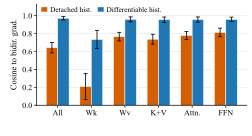

Self-Aligned ForcingStreaming Video Diffusion with Differentiable Noisy History
TL;DR
01 Overview
History stage and gradient flow
Autoregressive video diffusion reads the K/V of earlier blocks as history. Self-Forcing and HiAR detach it; SGF restores gradients through clean history using an extra rollout and replay. SAF instead uses differentiable noisy history from the same forward pass.

The history stage and gradient path determine whether future losses can improve how earlier blocks encode K/V.
Why noisy history needs gradients
With a fixed LongLive checkpoint, noisier history can increase motion at the cost of imaging quality. With all other settings held fixed, restoring gradients through history K/V raises alignment with a matched bidirectional reference from 0.643 to 0.972.


Aligned history, parallel rollout
At each stage, SAF gives the current block and its history the same noise level. One block-causal forward pass computes predictions and differentiable history together. Blocks roll out in parallel within a stage, while stages remain sequential; only a sampled exit stage retains gradients. A clean sink anchors appearance.

At inference, SAFM reuses denoising K/V in one bank per stage for four-GPU pipelining. SAFS shares one bank on a single GPU. Both avoid per-block timestep-zero recaching.
Training efficiency
SAF has the lowest memory and runtime in both settings: 1.41× faster than SGF in Chunk-wise and 1.82× in Frame-wise.
| Method | Chunk-wise · 3 latent frames / block | Frame-wise · 1 latent frame / block | ||
|---|---|---|---|---|
| Peak memory GiB ↓ | Time / 5 steps s ↓ | Peak memory GiB ↓ | Time / 5 steps s ↓ | |
| LongLive | 173.63 | 158.32 | 174.21 | 232.64 |
| SGF | 187.45 | 186.73 | 187.45 | 249.21 |
| SDF | 160.85 | 184.33 | 171.30 | 245.87 |
| SAF | 155.18 | 132.78 | 164.79 | 137.04 |
One GB300, batch size 4; local attention spans 12 latent frames in Chunk-wise and 21 in Frame-wise.
Inference throughput
SAFM reaches 49.1 FPS in Chunk-wise and 21.6 FPS in Frame-wise with four-GPU pipelining. SDF and SAFS share the same single-bank throughput.
SAF measured on 1 or 4 H100 GPUs; baseline FPS follow their published reports.
| Method / inference mode | Chunk-wise | Frame-wise | ||
|---|---|---|---|---|
| 1 GPU | 4 GPUs | 1 GPU | 4 GPUs | |
| LongLive | 20.7 | — | — | — |
| SGF | 20.7 | — | 8.9 | — |
| HiAR | 11.2 | 30.0 | — | — |
| SDF | 22.9 | — | 9.07 | — |
| SAFS Single KV | 22.9 | — | 9.07 | — |
| SAFM Multiple KV | 22.8 | 49.1 | 9.08 | 21.6 |
02 Long Video Comparison
03 Interactive Comparison
CITATION
BibTeX
arXiv preprint (2026).